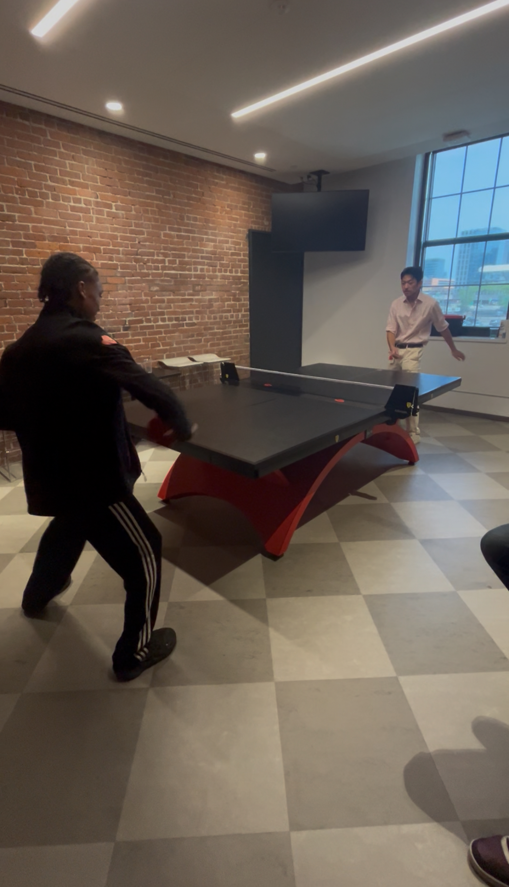
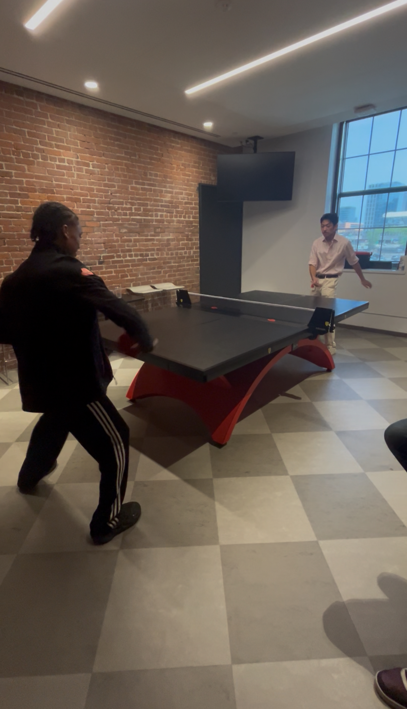

About Me
I go to Wayland High School, in Wayland, Massachusetts. I enjoy coding with AI, spending time with friends, and playing sports. I also like computer science, and in my free time I like to golf. Last summer, I trained a Chat GPT model with image recognition. That got me really interested in AI, and so I decided to take an OpenShift AI Learning Path.

 
